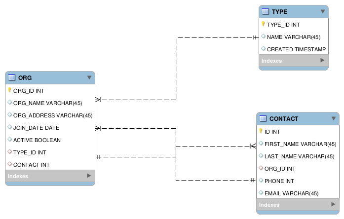
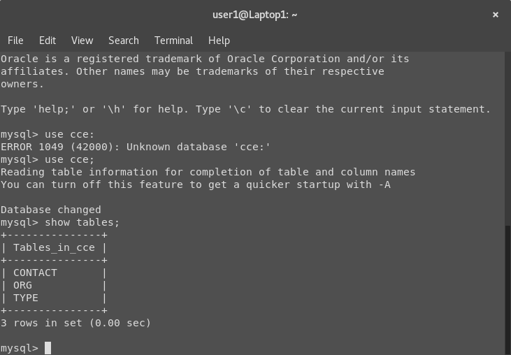
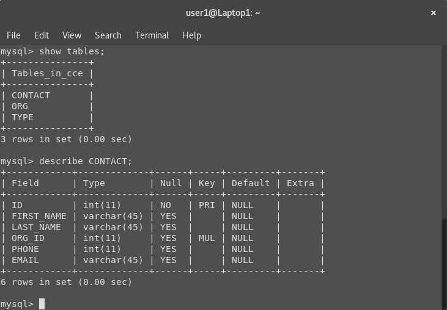

Databases
part of Python's standard libraries. The problem with all of these data structures is that they exist only while your program is running. Once the program ends or the exit() command is called, the data is lost unless you, in some way, write it to your disk. A common way to do this initially is to simply write out the data to a file of some sort (sometimes as a text file). If you remember we used the read() and write() methods in Concepts in Computing. The problem with this is that storing your data as plain text may not be the easiest or most efficient way to do it. Likewise, if you're dealing with complex models, you might use a library like Pickle to store your model as a particular model file. However, if you want to store large data sets, a database of some sort is often the way to do it. This allows you to keep your data is a reliable and stored place on the disk that can be efficiently read from and written to (reading and writing from a text file is really inefficient).
As I said, databases come in many flavors. We're going to be looking at SQL databases, which are particularly good for storing structured data. By structured, I mean that the data is going to have reliable attributes. For instance, a data set of PEOPLE might include FIRST_NAME, LAST_NAME, EMAIL, and BIRTHDAY. While a particular person might have more attributes in real life, I'm only collecting their names, email addresses, and birthdays. Since I have a regular structure for the data type PEOPLE, I can use a database to easily and quickly store that data. SQL databases are extremely fast and reliable, so if you're storing a lot of data that is easily structured into objects and attributes, they're a great way to go.
Your database server (MySQL, MariaDB, PostgreSQL, even ACCESS, etc) hosts all of your databases. Generally, each project has one or more databases. Rarely would you run multiple projects on the same database. The server listens for traffic at a particular address or as a process on the operating system in a similar way to web servers. Depending on the type of server, the specific protocol for sending and executing messages might vary. On the server there may be one or more databases. Each database itself is a collection of related tables not unlike Excel spreadsheets. These tables consist of rows of entries. The whole table will have a number of typed columns, each representing a particular attribute of the object in each row. When I say, "typed" I mean that each column can hold a particular type of data (strings, integers, text blobs, etc). So, why not just use Excel? In part, because database servers are really fast. Second, the tables can have relationships between them. So the ID of a particular table might be linked to the ID of entries in another table. Let me give you some examples. The following is a database diagram with three tables: 
You'll notice that there is the ORG table. This table has 7 attributes. Attribute 7 (CONTACT) references the CONTACT table, and specifically the value in attribute 7 in any row will be the ID of an entry in the CONTACT entry. This way I can keep by Contact people separate but linked to my organizations. This is useful because the contact might change or a single contact might be the contact for multiple organizations. Additionally, there is a link to TYPE. I decided my database wanted to also manage what type of organization each organization is. I will have a set of types (Environmental, Racial Justice, Education, etc). It seems useful to have some way to manage those types. I have them in a separate table because then I can have a predictable group of types without making big changes across the ORG table.
To look more closely at each table, the next pictures are printouts of the tables and the data types of each attribute: Database tables showing ORG, TYPE and CONTACT


What you see in the images above is the printouts from a MySQL database when I ask the server to describe the tables. The tables presented show the field names, the type, whether the field can be NULL, and any "foreign" keys or keys to other tables. The primary key is the main identifier from this table. Default tells us if there's a default value that gets inserted for that field into the row if no other value is provided. In this case, no. Entries that don't fill fields will leave those fields "NULL". This is okay, but I like to make sure that if I add a row, I've accounted for all of the fields as best as I can.
We interact with a SQL database server (MySQL, PostgreSQL, ACCESS, MariaDB, etc) with SQL, or Structured Query Language. You absolutely don't need to know any of this for Flask because SQLAlchemy takes care of that for us. It gives us methods to create and insert material into a database without having to mess about with establishing a connection to the database server and executing SQL commands against that server. It is good to know what's going on behind the scenes, however.
Understanding the kind of structure that is imposed on the data is important because it will help us understand the kind of formal constraints that exist in digital spaces that are so synonmous with data. For instance, let's think about my identity of Facebook. Facebook stores the data that defines users in a database, probably in a USERS table (or several USERS tables). While there are lots of different attributes to a person, the table will only hold certain attributes that matter to the Facebook application. Facebook could store your height, but they choose not to and the way they structure the data there is no place for that. Likewise, you might have several middle names, but if they do not provide an attribute for that, you'll have to squish them all together in one field or leave some of them off all together. Likewise, you'll notice there are fields with the type VARCHAR(45). This means that the field will hold a list of characters (commonly used for small strings) up to 45 characters in length. We could bump that up to VARCHAR(255), but it would take more space. Even then, the maximum length of the string would be 255. Imagine if I create a name field with the maximum length of 45 but one of my users has a name with 100 characters in it. They would have to abbreviate. This could be okay, but it is a decision that gets made when designing databases.
CRUD
One major concept related to databases and web frameworks is the CRUD model. This is an application design that focuses on data. Specifically, a CRUD application provides a database that holds data and a set of commands that allow users to Create, Read, Update and Delete data. Create means enter a new entry into the database tables. Read means read data from the database tables. Update means to change the value of one entry in the tables. Delete means to remove one or more entries from the tables. Your applications for this class will be CRUD applications. The majority of your work will be defining how the data is managed. Then you will create a simple frontend using Flask templates to allow users to create, read, update, and delete data from the database you've designed. To do this, you'll provide web forms and you'll have to think about what data pieces you'll be storing, how those will fit into tables, and what the relationship between those tables are. Designing the data system will be the most important piece. Then the next tricky part is figuring out how you want the user to be able to access the data either to read it (with a search) or update or delete values.
Models
Flask deals with databases through models. Our models use SQLAlchemy to connect to a SQLite database. It is light weight, the database is just a file stored in your app directory (or elsewhere), but it doesn't take advantage of some of the efficiencies that other database servers provide. You can certainly use other databases, and I'd recommend MariaDB or PostgreSQL for production purposes. Each model represents a single table within our database. It will have all of the fields and field types that the table will have. Instead of writing SQL statements, though, we'll be able to use our models and SQLAlchemy to manage the data.
Setting Up our Tests
Again, before we start writing any code, we want to set up some tests. There are two major concerns that we need to test. We must test that our database will accept data. We must also test that our forms can add data to our database. For now we're just going to add our create post functionality. I will write the tests first, and then we'll go through the setup required to get the database working and linked to our forms.
blog_test.py